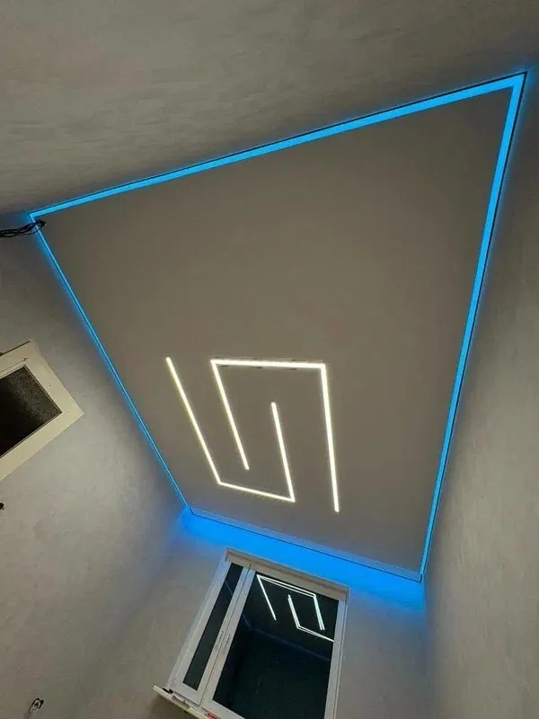
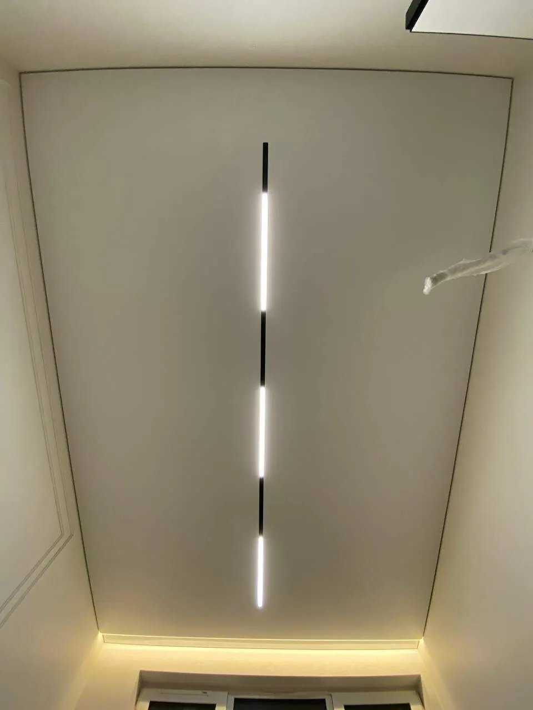
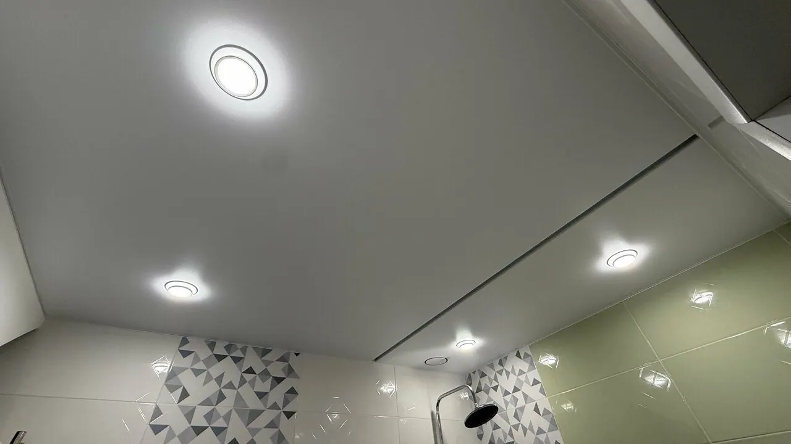

Световая линия — это алюминиевый профиль с рассеивателем и светодиодной лентой, который встраивается в натяжной потолок. Линия может идти по периметру, вдоль стен, дивана, кухонного гарнитура или делить комнату на зоны.
Мы подбираем схему света до монтажа: считаем длину линий, мощность блока питания, количество света и удобство управления. Это важно, чтобы линия не слепила, не давала пятен и её можно было обслуживать.
Световые линии можно комбинировать с теневым профилем, трековым светом и классическими светильниками.
Почему выбирают этот потолок
Ровный свет
Линия светит мягко и равномерно, без жёстких бликов и глубоких теней. Хорошо для кухни, гостиной и спальни.
Зонирование
Светом можно разделить кухню и столовую, выделить изголовье кровати или рабочую зону без перегородок.
Современный вид
Светящиеся линии выглядят как часть интерьера и не занимают место на потолке.
Управление светом
Подбираем диммеры и сценарии: тёплый свет вечером, нейтральный для работы, подсветка ночью.
Как проходит монтаж
- Обсуждаем сценарии света и составляем схему линий.
- На замере проверяем стены, высоту и точки подключения.
- Считаем профиль, ленту, блоки питания и работы.
- Монтируем профиль, подключаем свет, натягиваем полотно и проверяем сценарии.
Фото работ



Частые вопросы
Сколько света дают световые линии?
Зависит от длины линии, мощности ленты и рассеивателя. Для кухни или гостиной часто достаточно комбинации линии и нескольких точечных светильников. Точную схему считаем после замера.
Что будет, если перегорит лента?
Лента и блок питания обслуживаются. Для доступа предусматриваем ревизию или выбираем конструкцию, которая позволяет заменить оборудование без полного демонтажа полотна.
Можно ли сделать линии без люстры?
Да, если света хватает на всю площадь. Для больших комнат лучше комбинировать линии с точечными светильниками или треком.
Сколько стоит световая линия?
Стоимость зависит от длины, количества линий, типа профиля и блока питания. Ориентир по потолку — расчёт после замера, точная смета — после замера.
Нужен такой потолок?
Приедем на замер, привезём образцы и назовём точную цену. Работаем по Мытищам и Московской области.